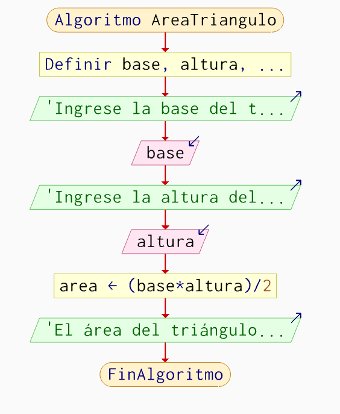
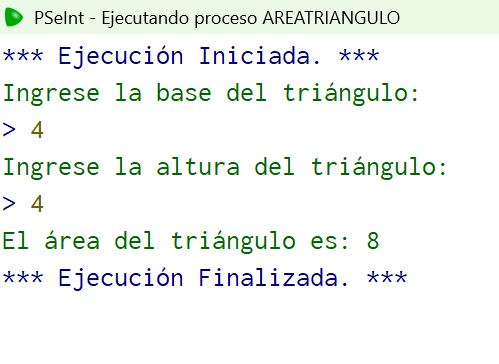
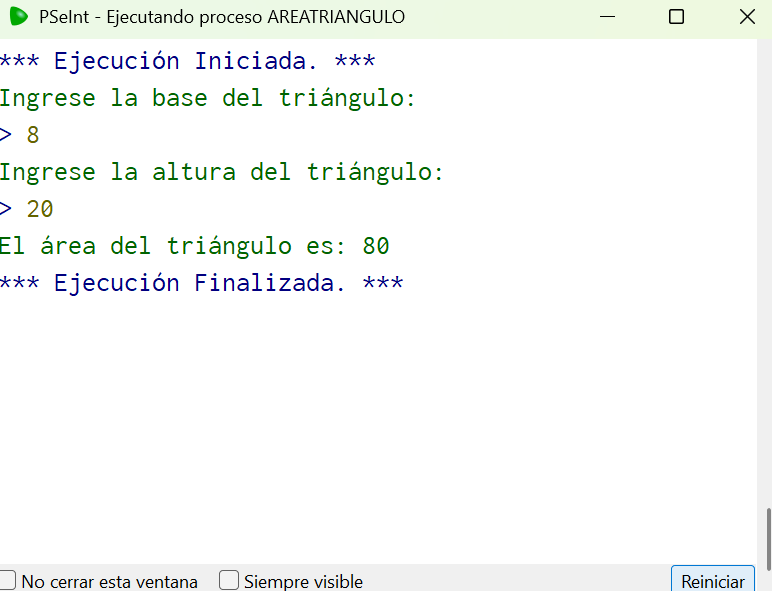
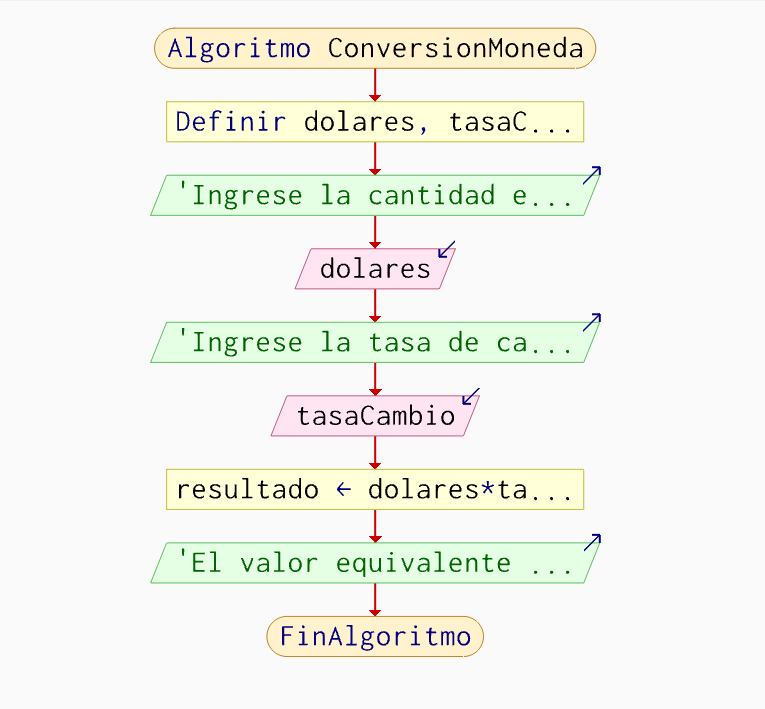
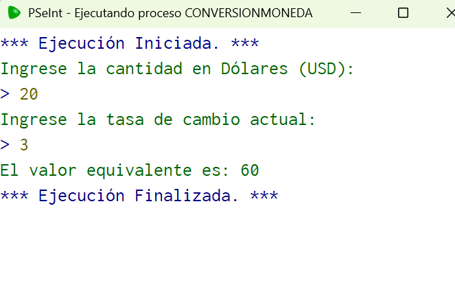
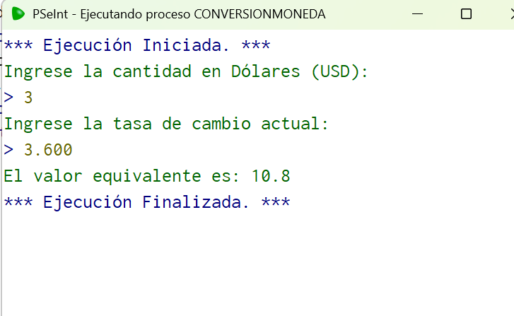
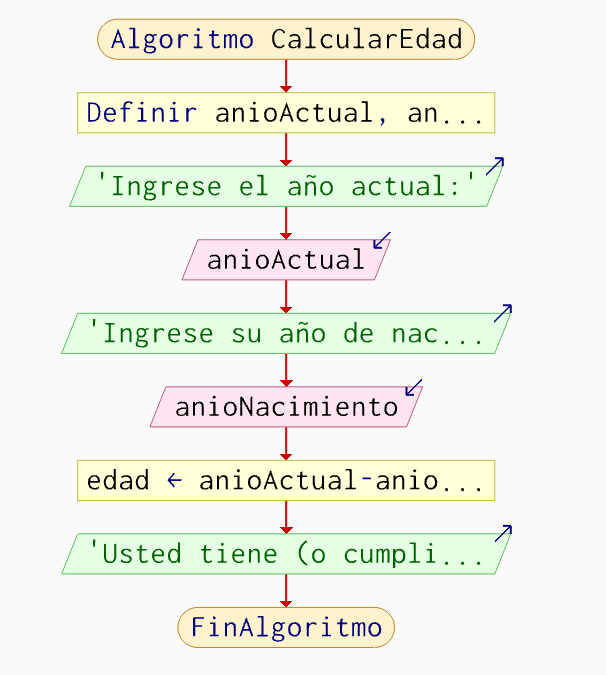
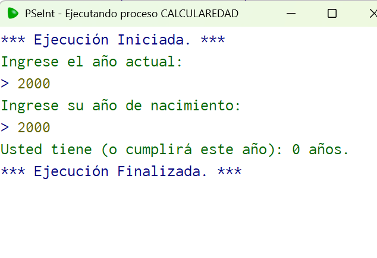
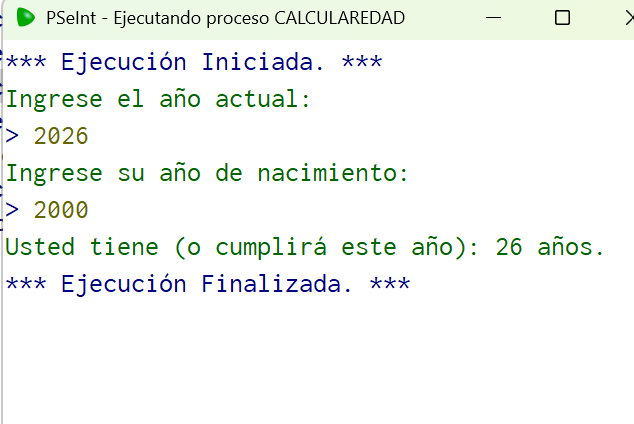
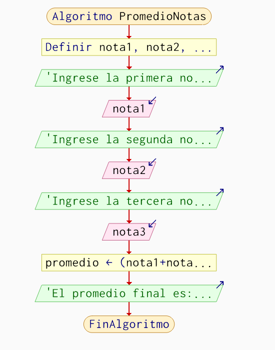

Área triángulo.
Se desarrolla la secuencia lógica del algoritmo para calcular el área de un triángulo, mediante el ingreso de la base y la altura, aplicando la fórmula matemática correspondiente para obtener el resultado.
Algoritmo AreaTriangulo
Definir base, altura, area Como Real
Escribir "Ingrese la base del triángulo:"
Leer base
Escribir "Ingrese la altura del triángulo:"
Leer altura
area <- (base * altura) / 2
Escribir "El área del triángulo es: ", area
FinAlgoritmoDiagrama de flujo:

Pruebas:

Prueba # 1.

Prueba # 2.
Conversión de moneda (USD a moneda local)
Convierte una cantidad dada de dólares estadounidenses (USD) a otra moneda usando una tasa de cambio fija.
Algoritmo ConversionMoneda Definir dolares, tasaCambio, resultado Como Real Escribir "Ingrese la cantidad en Dólares (USD):" Leer dolares Escribir "Ingrese la tasa de cambio actual:" Leer tasaCambio resultado <- dolares * tasaCambio Escribir "El valor equivalente es: ", resultado FinAlgoritmo
Diagrama de flujo:

Pruebas:

Prueba # 1.

Prueba # 2.
Cálculo de la edad actual
Calcula la edad aproximada de una persona restando el año de nacimiento del año actual.
Algoritmo CalcularEdad Definir anioActual, anioNacimiento, edad Como Entero Escribir "Ingrese el año actual:" Leer anioActual Escribir "Ingrese su año de nacimiento:" Leer anioNacimiento edad <- anioActual - anioNacimiento Escribir "Usted tiene (o cumplirá este año): ", edad, " años." FinAlgoritmo
Diagrama de flujo:

Pruebas:

Prueba # 1.

Prueba # 2.
Promedio de tres calificaciones
Toma tres notas parciales de un estudiante, calcula su promedio aritmético y muestra el resultado final.
Algoritmo PromedioNotas Definir nota1, nota2, nota3, promedio Como Real Escribir "Ingrese la primera nota:" Leer nota1 Escribir "Ingrese la segunda nota:" Leer nota2 Escribir "Ingrese la tercera nota:" Leer nota3 promedio <- (nota1 + nota2 + nota3) / 3 Escribir "El promedio final es: ", promedio FinAlgoritmo
Diagrama de flujo:

Pruebas:
Prueba # 1.
Prueba # 2.